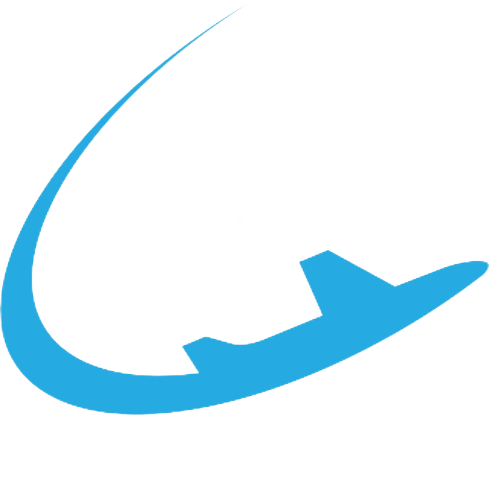
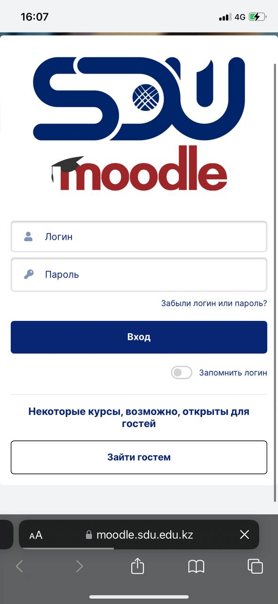

ABOUT USHKISH
USHKISH is a community of pilots and instructors of the SDU University.
We improve working conditions, offer ways to optimize business processes, and protect pilots' rights.
We are interested in the well-being and prosperity of the company.
Why USHKISH?
Only active pilots and instructors of SDU can join the trade union.

A clear mission
The main priority is the effective organization of working time and rest.
The social package and remuneration are only a consequence of
the company's personnel management policy.
Charity
We spend more than half of the union dues on financial assistance to colleagues and their relatives.
Only 10% of the proceeds go to pay for accounting, tax and legal services.
We do not pay the salary of the chairman or any of the members of the trade union.
Flexible policy
We understand that employees' desires are limited by business opportunities.
In our presentations and negotiations, we adhere to a restrained policy.
Defending the rights of pilots, we do not infringe
on the rights of other employees of the company
How to join?
Enter MOODLE
Go to the website moodle.com and log in with your corporate username and password
Run the process
In the upper right corner of the MOODLE page, click on Start the Process. Next, Finance - Joining /leaving the union.
Fill in
Specify the cell phone number that has WhatsApp on it. The rest of the information will be downloaded automatically from the employee database
Confirmation
After filling out the form, it is sent to the chairman of the trade union for approval, and then to the financial department of the company.
Prepare a photo or PDF of an identity card, this is necessary for financial and tax reporting.
It is important to fill in the cell phone number correctly, where there is WhatsApp, where we hold meetings,
discussions and voting.
After approval, the application is sent to the Finance Department.
Your employee card is marked with membership in a trade union organization.
This is how the automatic write-off of union contributions from wages is formed.
Join USHKISH

Applications are approved within a week. Union dues are deducted automatically from the next month.